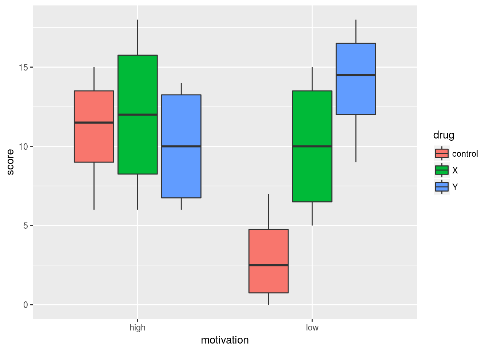
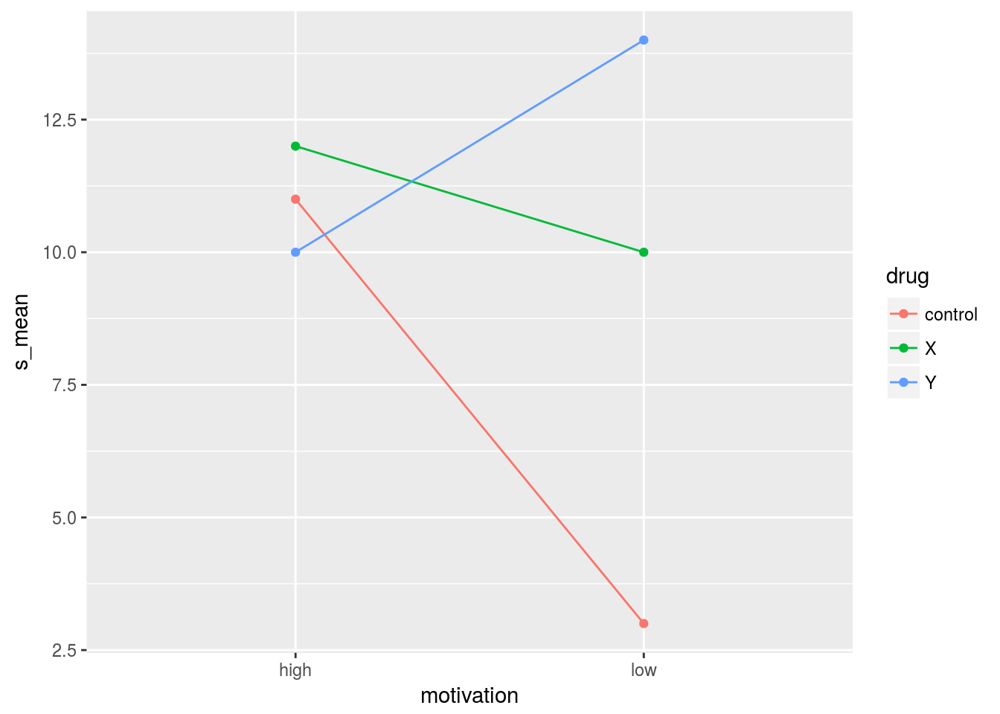

Tidy simple effects in analysis of variance
Introduction
In two-way analysis of variance, the (continuous) response variable depends on two explanatory factors, say A and B. These factors might have an additive effect, in which case you can talk unambiguously about “the effect of factor A”, but the effect of factor A might be different depending on what level of factor B you are looking at. In that case, factors A and B are said to have an interaction. Understanding interactions can be difficult. One way to do it is via “simple effects”, where you look at the levels of one factor individually and assess the effect of the other factor at each level of the first.
Let’s think about an example. In an experiment, monkeys were asked to solve “oddity problems”, in which they were presented with sets of three objects, one of which was different from the others. If they correctly identified the odd object, they were rewarded with food. Some of the monkeys had been food-deprived before the experiment; they were believed to be “highly motivated” to find the odd object (and get fed). In addition, each monkey received a drug, one of X, Y and a placebo (labelled “control”). Four monkeys were in each combination of motivation (high or low) and the three drugs. The response variable was a score based on the number of problems a monkey got wrong, so that a lower score is better. Our question is what effects the drugs have on the score, and is that effect different depending how motivated a monkey is?
Packages
We need these two. broom will be used later to produce some easy-to-handle output:
library(tidyverse)## ── Attaching packages ──────────────────────────────────────────────────────────────────── tidyverse 1.2.1 ──## ✔ ggplot2 2.2.1.9000 ✔ purrr 0.2.4
## ✔ tibble 1.4.2 ✔ dplyr 0.7.4
## ✔ tidyr 0.7.2 ✔ stringr 1.2.0
## ✔ readr 1.1.1 ✔ forcats 0.2.0## ── Conflicts ─────────────────────────────────────────────────────────────────────── tidyverse_conflicts() ──
## ✖ dplyr::filter() masks stats::filter()
## ✖ dplyr::lag() masks stats::lag()library(broom)Exploratory analysis
Let’s read in and check the data:
my_url="http://www.utsc.utoronto.ca/~butler/d29/oddity.csv"
monkeys=read_csv(my_url)## Parsed with column specification:
## cols(
## motivation = col_character(),
## drug = col_character(),
## score = col_integer()
## )monkeys## # A tibble: 24 x 3
## motivation drug score
## <chr> <chr> <int>
## 1 low control 1
## 2 low control 4
## 3 low control 0
## 4 low control 7
## 5 low X 13
## 6 low X 5
## 7 low X 7
## 8 low X 15
## 9 low Y 9
## 10 low Y 16
## # ... with 14 more rows24 monkeys, for each a motivation level, a drug and a score, in tidy format.
An appropriate visual is a grouped boxplot. One of the explanatory variables is the x of the boxplot, and the other one is entered as fill, thus:
ggplot(monkeys,aes(y=score,x=motivation,fill=drug))+geom_boxplot()
The fill fills the boxes with the different colours; using colour instead outlines the boxes in different colours.
The story to get from this is that for the high-motivation monkeys, there isn’t much difference between the drugs, but for low-motivation monkeys, there is a big difference; the score is a lot better (lower) for the placebo than for either of the genuine drugs, and drug Y is worse than X. This suggests that the effect of drug depends on how motivated the monkey is: an interaction.
Another way of visualizing this is to use an “interaction plot”: a plot of mean response by group combination, as below. First we find means by group combination, and then we plot them:
monkeys %>%
group_by(motivation,drug) %>%
summarize(s_mean=mean(score)) %>%
ggplot(aes(y=s_mean,x=motivation,colour=drug,group=drug))+
geom_point()+geom_line()
This is like a stripped-down version of the grouped boxplot. The idea is that you look at the lines, and ask whether they are (at least approximately) parallel. Here it seems that they are not, which would imply an interaction. (The interaction plot shows means, but doesn’t tell you anything about variability, so it is possible to be deceived).
The analysis of variance
With the previous pictures in mind, we should run an analysis of variance with interaction, expecting it to be significant:
score.1=aov(score~motivation*drug,data=monkeys)
summary(score.1)## Df Sum Sq Mean Sq F value Pr(>F)
## motivation 1 24 24.00 1.309 0.2675
## drug 2 112 56.00 3.055 0.0721 .
## motivation:drug 2 144 72.00 3.927 0.0384 *
## Residuals 18 330 18.33
## ---
## Signif. codes: 0 '***' 0.001 '**' 0.01 '*' 0.05 '.' 0.1 ' ' 1At \(\alpha=0.05\), the interaction is indeed significant. We need to understand what kind of interaction we have , and not go to interpreting the main effects motivation and drug, because those do not have a consistent effect that we will be able to understand.
Simple effects
One way of understanding a significant interaction is to condition on the level of one variable and look for the effect of the other. Here we will condition on motivation, and look separately for an effect of drug. (The conditioning that makes sense will depend on the application.)
The way to assess the simple effects is to pull out just the data for just the motivation level you’re looking at (say low), and then do a one-way ANOVA of score on drug for just those observations. Then you repeat for the other motivation level. The obvious way to do this is something like
monkeys %>% filter(motivation=="low") %>%
aov(score~drug,data=.) %>%
summary()## Df Sum Sq Mean Sq F value Pr(>F)
## drug 2 248 124 7.75 0.011 *
## Residuals 9 144 16
## ---
## Signif. codes: 0 '***' 0.001 '**' 0.01 '*' 0.05 '.' 0.1 ' ' 1and then repeat for the other motivation level. But there is a lot of repetitiveness here. Is it possible to automate the implied loop over motivation levels?
Simple effects, the tidy way
There is a way to do both simple-effects ANOVAs at once. It requires map, list-columns and a couple of helper functions. Let’s take it a step at a time:
monkeys %>%
nest(-motivation)## # A tibble: 2 x 2
## motivation data
## <chr> <list>
## 1 low <tibble [12 × 2]>
## 2 high <tibble [12 × 2]>This condenses the data frame into two parts: one is the data for the low-motivation monkeys, and one for the high. The thing in the data column is the entire rest of the data (for each level of motivation), so each nested data-frame-within-a-data-frame contains a score column and a drug column, but not a motivation column (since we excluded that from the nest: “everything but motivation”). So for each of these data frames, we need to run a one-way ANOVA of score on drug, which will test for the presence of simple effects of drug.
To do that, I like to write a helper function. Here that will do the ANOVA of score on drug for any input data frame that happens to have columns by those names:
anova_pval=function(x) {
x.1=aov(score~drug,data=x)
summary(x.1)
}
anova_pval(monkeys)## Df Sum Sq Mean Sq F value Pr(>F)
## drug 2 112 56.00 2.361 0.119
## Residuals 21 498 23.71This appears to be correct, but it’s not the most helpful output, because we want the P-value and the summary output doesn’t provide an easy way to get at that. This is where broom comes in: it provides the glance function to give a one-line summary of a model, and a tidy function to give “tidy” output of a model, in both cases the output being a data frame, so it’s easy to do other things with.
In this case, we want just the P-value, so glance seems like the thing:
anova_pval=function(x) {
x.1=aov(score~drug,data=x)
glance(x.1)
}
anova_pval(monkeys)## r.squared adj.r.squared sigma statistic p.value df logLik
## 1 0.1836066 0.1058548 4.869732 2.361446 0.1188351 3 -70.44508
## AIC BIC deviance df.residual
## 1 148.8902 153.6024 498 21The thing we want is p.value, so:
anova_pval=function(x) {
x.1=aov(score~drug,data=x)
glance(x.1)$p.value
}
anova_pval(monkeys)## [1] 0.1188351That’s what we want.
Now, to do that for each motivation level, we calculate a new column pval that calculates the P-value for each of our nested data frames, using map. This function returns a decimal number, so map_dbl is the thing. Adding that to the end of our pipeline, recognizing that the data frames we want P-values for are the ones hidden in the data column (“for each data frame in data, run anova_pval on it”):
monkeys %>%
nest(-motivation) %>%
mutate(pval=map_dbl(data,anova_pval))## # A tibble: 2 x 3
## motivation data pval
## <chr> <list> <dbl>
## 1 low <tibble [12 × 2]> 0.0110
## 2 high <tibble [12 × 2]> 0.827And there we have the two simple-effects ANOVAs. For the low-motivation monkeys, there is a significant difference in scores between the drugs, and for the high-motivation monkeys, there is not.
Tidy simple-effects Tukey
For the high-motivation monkeys, that’s the end of the story: there are no differences in mean score among the different drugs. But for the low-motivation monkeys, there is more to say, because we don’t know which drugs differ from which.
A modification of what we did for the two ANOVA P-values will also get the two Tukey Honestly Significant Difference tables. We don’t really need the one for high-motivation monkeys, but I wanted to illustrate the procedure, so we’ll see what it produces.
The first thing is a helper function to get the (tidy) Tukey output for a data frame x that happens to have a score and drug column in it:
tukey_table=function(x) {
x.1=aov(score~drug,data=x)
TukeyHSD(x.1)
}
tukey_table(monkeys)## Tukey multiple comparisons of means
## 95% family-wise confidence level
##
## Fit: aov(formula = score ~ drug, data = x)
##
## $drug
## diff lwr upr p adj
## X-control 4 -2.13725 10.13725 0.2504184
## Y-control 5 -1.13725 11.13725 0.1242236
## Y-X 1 -5.13725 7.13725 0.9116034That is almost it, but not quite; what we want is the table at the bottom. It looks as if tidy should produce that:
tukey_table=function(x) {
x.1=aov(score~drug,data=x)
tidy(TukeyHSD(x.1))
}
tukey_table(monkeys)## term comparison estimate conf.low conf.high adj.p.value
## 1 drug X-control 4 -2.13725 10.13725 0.2504184
## 2 drug Y-control 5 -1.13725 11.13725 0.1242236
## 3 drug Y-X 1 -5.13725 7.13725 0.9116034That’s exactly what we need, with the column adj.p.value containing the Tukey-adjusted P-values for each pair of means. So now we put this into our pipeline in place of anova_pval, using map instead of map_dbl because tukey_table returns a data frame rather than a number:
monkeys %>%
nest(-motivation) %>%
mutate(tukey=map(data,tukey_table))## # A tibble: 2 x 3
## motivation data tukey
## <chr> <list> <list>
## 1 low <tibble [12 × 2]> <data.frame [3 × 6]>
## 2 high <tibble [12 × 2]> <data.frame [3 × 6]>The column tukey contains the two Tukey tables, but unfortunately we can’t see them, because they are wrapped up in a list-column. The way to “explode out” a list-column so that you can see it is to unnest it, which lends the pipeline a pleasing symmetry:
monkeys %>%
nest(-motivation) %>%
mutate(tukey=map(data,tukey_table)) %>%
unnest(tukey)## # A tibble: 6 x 7
## motivation term comparison estimate conf.low conf.high adj.p.value
## <chr> <fct> <chr> <dbl> <dbl> <dbl> <dbl>
## 1 low drug X-control 7.00 - 0.897 14.9 0.0818
## 2 low drug Y-control 11.0 3.10 18.9 0.00927
## 3 low drug Y-X 4.00 - 3.90 11.9 0.374
## 4 high drug X-control 1.00 - 7.98 9.98 0.948
## 5 high drug Y-control - 1.00 - 9.98 7.98 0.948
## 6 high drug Y-X - 2.00 -11.0 6.98 0.812There are three pairs of means to compare for each motivation level, so that the motivations low and high are repeated three times each.
The three P-values for high motivation are all above 0.8, which is confirming that there were no significant differences among the drugs for the high-motivation monkeys (this is what we found before). There were differences in drugs for the low-motivation monkeys; this Tukey tells us that this is because drug Y and control showed a significant difference in score (with drug Y producing a higher score on average), but neither of the differences involving drug X did.
Conclusion
The nest-mutate-unnest combination is a powerful tidyverse way to repeat an analysis on subsets of a data set without implicitly or explicitly writing a loop. Simple effects in analysis of variance provides a nice example of this, where, by writing helper functions, we are able to get the P-values and the Tukey multiple-comparison tables for each of the simple analyses.
Thanks
to Julia Silge, @juliasilge (see for example this tweet) for planting the idea of tidy in my head in this context (I hadn’t realized that tidy(quantile) works, which is where it all started: see this Stack Overflow answer), and for pushing my thinking in this direction generally. I had been grappling with split, which is a much uglier way of solving this kind of problem (in my humble opinion).